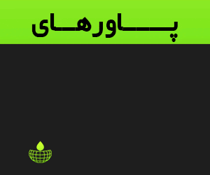
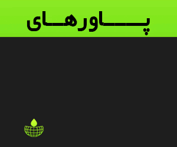

خالقان ۱۸۹۹ که با ساختِ سریال Dark به شهرت رسیدند، آنقدر درگیر بازیافت موفقیتِ قبلیشان هستند که از متمایز کردنِ کافی اثرِ جدیدشان نسبت به سریال سابقشان باز میمانند. گرچه مدتی طول کشید تا «تاریک» به یک موفقیتِ بینالمللی بدل شود، اما این سریالِ آلمانی بهلطفِ تبلیغاتِ دهان به دهانِ کرکنندهاش بالاخره به جمعِ بزرگترین پدیدههای نتفلیکس پیوست و خالقانش، زوجِ باران بو اودار و یانتیه فریزه، را به یک برند بدل کرد (تا جایی که چهرهی آنها در کنار بازیگران روی پوسترهای «۱۸۹۹» دیده میشود). «۱۸۹۹»، مخلوقِ جدیدِ آنها اما درحالی دو سال پس از اپیزودِ فینالِ «تاریک» پخش میشود که اینبار همه از مدتها قبل مشتاقانه برای مُچاله شدنِ مغزهایشان بهوسیلهی پازلِ جدید آنها صف کشیده بودند. آیا آنها موفق شدهاند از پس وزنِ کمرشکنِ انتظاراتِ جامعهی طرفدارانشان بربیایند؟ «۱۸۹۹» که میتوان آن را بهدلیلِ تشابهاتِ فراوانش با الگوی داستانگویی، فرمول معماپردازی و مولفههای «تاریک» بهعنوانِ یک «دنبالهی معنوی» توصیف کرد، دقیقا همان چیزی است که از پروژهی جدیدِ این زوج انتظار میرود: دوباره یک علامتِ سهگوشِ مرموز روی سطوحِ مختلف دیده میشود؛ دوباره کاراکترها چهاردستوپا از تونلهای تاریک برای رفتوآمد بین دنیاهای موازی استفاده میکنند؛ دوباره شاهدِ یک پناهگاهِ زیرزمینی که با کاغذ دیواریهای رنگارنگِ کودکانه تزیین شده هستیم، دوباره یک غریبهی سیاهپوش به راهنمای شخصیت اصلی بدل میشود، دوباره باید به شنیدنِ متوالی یک عبارتِ جدید عادت کنیم («آغاز پایان است و پایان آغاز است» در آنجا و «آنچه گمشده، آشکار خواهد شد» در اینجا) و دوباره معما با یک پسربچه آغاز میشود (اگر حادثهی محرکِ «تاریک» گمشدنِ یک پسربچه است، در اینجا پیدا شدنِ یک پسربچه عملکردِ مشابهای دارد). نهتنها فصل اول هر دو سریال با یک دیالوگِ نسبتا مشابه به پایان میرسند («به آینده خوش اومدی» در آنجا و «به واقعیت خوش اومدی» در اینجا)، بلکه مجددا یک دانشمندِ نابغه که تابِ تحمل مرگِ عزیزانش را نداشته است، راهی را برای احیا کردنِ آنها ابداع کرده است که زندگی عدهای را در یک چرخهی تکرارشونده به جهنم بدل کرده است. درواقع، یکی از توئیستهای فصل اولِ این سریال پیرو توئیستهای «تاریک» است: کاراکترهایی که فکر میکردیم دو فرد مُجزا در دو جبههی متضاد هستند، یک نفر از آب درمیآیند. تازه، درست مثل «تاریک» تکتکِ اپیزودها با مونتاژی از کاراکترها که با یک موسیقیِ راکِ مشهور تدوین شدهاند، به پایان میرسند. همهی این عناصر آشنا اما در بسترِ یک مفهومِ علمیتخیلیِ جدید جای دارند: اگر کاراکترهای «تاریک» اسیرِ یک چرخهی زمانیِ باطل بودند، در «۱۸۹۹» با چرخهی عذابآورِ مشابهای از جنس دنیاهای دیجیتالیِ شبیهسازیشده طرف هستیم. اگر «تاریک» دربارهی سروکله زدن با درهمتنیدگیِ خطهای زمانی بود، تقلای کاراکترهای «۱۸۹۹» از تلاششان برای متمایز کردنِ واقعیت از توهمِ شبیهسازیشده سرچشمه میگیرد. نتیجه اما یکسان است: هردو سریالِ راوی داستانِ کاراکترهایی هستند که با وحشتزدگی به خودشان میآیند و میبینند هر چیزی که دربارهی هویتشان، دنیایشان و جایگاهشان در آن میدانستند، دروغ بوده است. نقاط اشتراکِ محتوایی و ساختاری فراوانِ این سریال با «تاریک» همچون یک تیغ دولبه عمل میکنند؛ آنها همانقدر که میتوانند «۱۸۹۹» را به جایگزینِ ایدهآلی برای «تاریک» بدل کنند، همانقدر هم میتوانند «۱۸۹۹» را به یک سریال بیهویت و قابلپیشبینی که عناصر تشکیلدهندهاش را از یک سریالِ بکرِ دیگر قرض گرفته است، تنزل بدهند. در حین تماشای «۱۸۹۹» نادیده گرفتنِ این حس که انگار سازندگان دارند سریال قبلیشان را مجددا با یک روکشِ جدید به خوردمان میدهند، سخت میشود و این سطح از محافظهکاری از سمتِ کسانی که با ابتکار و تجربهگرایی تمامعیارِ اثرِ قبلیشان هوش از سرمان بُرده بودند، دلسردکننده است. باران بو اودار و یانتیه فریزه از بودجهی بزرگتری که پس از موفقیتِ پروژهی قبلیشان بهدست آوردهاند برای روایتِ داستانی جسورانهتر و بدیعتر استفاده نکردهاند، بلکه راه آسان را انتخاب کردهاند: بازیافتِ موفقیتِ قبلی با ظاهری نسبتا متفاوت.
اما حداقل در ابتدا اولین چیزی که «۱۸۹۹» را از «تاریک» متمایز میکند، مقیاسِ عظیمترِ آن است که بهلطفِ بودجهی عظیمترِ نتفلیکس امکانپذیر شده است. «تاریک» در یک شهرِ کوچکِ آلمانی اتفاق میاُفتاد و حتی با وجودِ پردهبرداری از لایههای بیشتری از ایدههای علمیتخیلیاش، همیشه شخصی و جمعوجور احساس میشد. «۱۸۹۹» اما از همان بدو ورود بزرگتر به نظر میرسد؛ داستان روی عرشهی یک کشتیِ بخار با بیش از یک هزار مسافر از سراسر اروپا و آسیا آغاز میشود که در وسط اقیانوس اطلس به سمتِ ایالات متحده حرکت میکند. همچنین، برخلافِ «تاریک» که مخاطب را آرامآرام درونِ معمای جنونآمیزِ مرکزیاش غرق میکرد، «۱۸۹۹» برای سردرگم کردنِ مخاطبانشان وقت تلف نمیکند. خالقانِ سریال میدانند که جامعهی طرفدارانشان کسانی هستند که از خطهای زمانی پیچدرپیچ، شجرهنامههای سرسامآور، اسطورهشناسیِ حجیم و ایدههای علمیتخیلی و فلسفیِ سنگینِ «تاریک» جان سالم به در بُردهاند؛ میدانند که آنها بازماندگانِ آبدیدهای هستند که برای اینکه فورا به چالش کشیده شوند بیتابی میکنند و سردردِ لذتبخشِ ناشی از گلاویز شدن با یک معمای چندبُعدیِ جدید را طلب میکنند. پس، قبل از اینکه شروع به زیر سؤال بُردنِ ماهیتِ واقعیت کنیم، هیچ مقدمهای برای آشنایی اولیه وجود ندارد. از همین رو، سریال نه در کشتی بزرگی که لوکیشنِ اصلی داستان است، بلکه در یک بیمارستان روانی آغاز میشود. همهچیز کاملا گنگ و نامفهوم است؛ درحالی که یک زنِ موقرمز به سمتِ یک اتاقِ ناشناخته کشیده میشود، فریادزنان از کسی که او را «پدر» خطاب میکند میخواهد تا جای برادرش را به او بگوید و وقتی با سکوتِ پدرش مواجه میشود، میگوید: «اون فهمیده بود که تو اون کشتیها چیکار میکنی؟» و درنهایت اضافه میکند: «من دیوونه نیستم! با حافظهی من چیکار کردید؟». اما ناگهان اتفاقی دیوانهوار میاُفتد: پدرِ زن موقرمز میگوید: «بیدار شو» و وقتی زن چشمانش را باز میکند، خودش را در یکی از اتاقهای یک کشتی مسافربری به اسم «سِربِروس» که راهی نیویورک است، پیدا میکند. او منهای کبودی مُچِ دستانش و نیازش به اینکه باید در آینه نگاه کند تا اسم خودش (مورا فرانکلین)، تاریخ (نوزدهم اُکتبر ۱۸۹۹) و دیوانهنبودنش (در ادامه معلوم خواهد شد!) را به خودش یادآوری کند، مُرتب و هوشیار به نظر میرسد. در نتیجه «۱۸۹۹» از همان نخستین دقایقِ سریال مجبورمان میکند تا حتی به چشمانِ خودمان هم اعتماد نداشته باشیم، همهچیز را زیر سؤال ببریم و به همهکس مشکوک باشیم. آیا سکانس بیمارستانِ روانی یک رویا است؟ آیا تمام اتفاقاتی که در کشتی میاُفتند جزیی از یک رویا هستند؟ آیا سکانسِ بیمارستانِ روانی قبل از بخشِ کشتی اتفاق میاُفتد یا بعد از آن؟ آیا هردوی آنها موازی با یکدیگر اتفاق میاُفتند؟ آیا با یک وضعیتِ «ماتریکس»گونه طرف هستیم؟ آیا اصلا میتوان به زاویهی دیدِ مورا تکیه کرد؟ ذاتِ غیرقابلاعتمادِ همهچیز به اتمسفرِ غبارآلودی از جنسِ بیقراری و پریشانی منجر میشود. سریال به این وسیله نهتنها همدلی کردن با شرایط نامطمئن و کلافهکنندهی شخصیت اصلیاش را آسان میکند، بلکه ترغیبمان میکند تا چشمانمان را برای یافتنِ هر سرنخی که به فهمیدنِ اوضاع کمک میکند، تیز کنیم. اما یک چیز دیگر در تقویتِ فضای کنجکاویبرانگیزِ سریال نقش دارد: تمام فکروذکرِ مسافرانِ سِرِبروس درگیر این حقیقت است که حدود چهار ماه قبل «پرومتئوس»، یکی از کشتیهای همان شرکتی که صاحبِ سِربروس است، در اقیانوس گم شده بود. گرچه گروهِ شخصیتهای اصلی سریال از نقاط مختلفِ دنیا میآیند، اما به نظر میرسد که همهی آنها حداقل یک نقطهی مشترک دارند: همه آنها یا رازِ تاریکی در گذشته دارند یا با انگیزهی فرار کردن از گذشتهشان سوار این کشتی شدهاند.
مورا فرانکلین (با نقشآفرینی اِمیلی بیچام که اُمیدوارم من تنها کسی نباشم که متوجهی لحنِ صدای نیکول کیدمنگونه و چهرهی اِیمی آدامزگونهاش شده باشم!) در قلبِ گروهِ شخصیتهای پُرتعدادِ سریال جای میگیرد: او دکترِ مُتخصصِ علوم اعصاب و روان است؛ هدفِ او از سوار شدن به این کشتی لذت بُردن از تعطیلاتش در نیوریورک نیست، بلکه دلیلش این است که او یک نامه از برادرش دریافت کرده است؛ برادری که چهار ماه از ناپدید شدنش میگذرد. نامه حاوی یک مقالهی روزنامه دربارهی ناپدید شدنِ کشتی پرومتئوس و یک کارت پُستال است که جملاتِ آرامشبخشی مثل «من فهمیدم پدرمون چیکار کرده» و «به هیچکس اعتماد نکن» روی آن نوشته شده است! مورا باور دارد که برادرش یکی از مسافرانِ پرومتئوس بوده است. همهی این رازها ما را به بزرگترین نقطهی قوتِ جنس داستانگوییِ زوجِ باران بو اودار و یانتیه فریزه که همزمان بزرگترین نقطهی ضعفش هم است میرساند: «۱۸۹۹» از متودی برای داستانگویی استفاده میکند که به «جعبهی معما» مشهور است؛ جی. جی. آبرامز، یکی از خالقانِ سریال «لاست»، این متود را برای اولینبار در قالبِ یک سخنرانی تِد معرفی کرد. او در سخنرانیاش صفحهی سفیدِ فیلمنامه را به یک جعبهی معما تشبیه میکند که باید با انواع و اقسامِ رازها پُر شود. هدف این است که باید با بسته نگه داشتنِ در جعبه، با امتناع از افشای اطلاعات، خیالپردازیِ مخاطب دربارهی محتویاتِ جعبه را به جُنبوجوش انداخت. هرچه مخاطب را بیشتر تشنه نگه داری، آنها بیشتر برای دنبال کردنِ داستان، زیر ذرهبین بُردنِ تکتک فریمهای سریال، نظریهپردازی و تبادل نظر ترغیب میشوند. سریالهای جعبهی معما به این صورت عمل میکنند که سوالاتِ بزرگ به طرح سوالاتِ کوچکتر و آن سوالات به طرح خُردهسوالاتِ به مراتب کوچکتر منجر میشوند و آنها پس از یک دور کامل به طرح سوالاتِ بزرگتر منتهی میشوند. در ایدهآلترین حالتِ ممکن این سوالات مثل حلقههای یک زنجیر به یکدیگر متصل هستند. برای مثال در «لاست» این سؤال که «آن دریچهی آهنی اسرارآمیز در کفِ جزیره چه چیزی است؟» یک جواب داشت: این دریچه به یک ایستگاه زیرزمینی منتهی میشود که محل کار و زندگیِ شخصی به اسم دزموند هیوم است. اما این پاسخ در عین برطرف کردن یک سؤال، خود به طرحِ مجموعهی بزرگتری از سوالاتِ تودرتو منجر میشد: دزموند در آنجا چه کار میکند؟ چگونه کار او به جزیره کشیده شده است؟ کارفرمایانِ او چگونه از وجود جزیره خبردار شدهاند و هدفِ آزمایشاتشان در آنجا چیست؟ و دوباره پاسخ گرفتن یکی از این سوالات به جوانه زدن سوالاتِ بیشتر منتهی میشد (چرا دزموند باید هر ۱۰۸ دقیقه یک بار یک شمارهی مرموز را برای جلوگیری از آخرالزمان در یک کامپیوتر وارد کند؟). این متودِ داستانگویی ذاتا بد یا خوب نیست، بلکه بستگی دارد که چگونه به کار گرفته میشود. اما تعدادِ سریالهای خود«لاست»پندارِ شکستخوردهای که از این فرمول استفاده میکنند آنقدر بیشتر از سریالهای موفق است که نمیتوان نسبت به سریالهای جدیدی که از این فرمول استفاده میکنند، بدبین نبود. رایجترین مشکلی که سریالهای جعبهی معما به آن دچار میشوند اولویت پیدا کردنِ معما بر شخصیت و مسدود کردنِ جریان هدفمند و طبیعی اطلاعات به منظورِ قایمباشکبازی کردن با مخاطب و به تعویق انداختنِ غافلگیریها تا لحظهی آخر است. وقتی صحبت از اصولِ فیلمنامهنویسی میشود، در تمام کتابهای آموزشِ فیلمنامهنویسی و از زبانِ تمام فیلمنامهنویسانِ حرفهای با یک سری سوالاتِ مشابه مواجه میشویم: یک شخصیت چه چیزی میخواهد (مثلا وودی میخواهد اسباببازی محبوبِ اندی باشد)؟ این شخصیت نیاز دارد که چه حقیقتی را یاد بگیرد (وودی باید عشقِ اندی را با باز لایتیر تقسیم کند)؟ این شخصیت چگونه این حقیقت را یاد خواهد گرفت؟ این شخصیت چه احساسی نسبت به اتفاقی که هماکنون دارد میاُفتد دارد؟ خواستههای این شخصیت چگونه با خواستههای دیگر شخصیتها برخورد میکند و باعثِ خلقِ کشمکشِ روانی میشود؟ این کشمکش چگونه به داستانگوییِ علت و معلولی منجر میشود؟ کشمکش چگونه باعثِ خلق کشمکش بیشتر میشود؟ یا گرهگشاییهای جدید چگونه باعثِ خلقِ کشمکشهای متفاوت میشوند؟ گرهگشایی چگونه داستان را بهشکلی معنادار به جلو هُل میدهد؟ گرهگشایی چگونه شخصیت را تغییر میدهد؟ چگونه مجموعِ همهی اینها به یک سفرِ روانشناسانهی معنادار منتهی میشوند؟ این شخصیت در پایانِ داستانش قادر به انجام چه کاری است که در ابتدای داستان از انجامش عاجز بود؟ سفر او چگونه این پیشرفتِ شخصیتی را امکانپذیر کرده است؟ همهی این شخصیتپردازیها چگونه زیر چترِ یک تمِ رو به رشد که قلب و ذهنِ مخاطب را درگیر میکند قرار میگیرند؟ چگونه همهی اینها بهجای اینکه همچون یک مقالهی پندآموز توضیح داده شوند، بهطرز یکپارچه و نامحسوسی به وسیلهی اعمالِ اُرگانیکِ کاراکترها دراماتیزه میشوند؟ رایجترین مشکلی که سریالهای جعبهی معما به آن دچار میشوند اولویت پیدا کردنِ معما بر شخصیت و مسدود کردنِ جریان هدفمند و طبیعی اطلاعات به منظورِ قایمباشکبازی کردن با مخاطب و به تعویق انداختنِ غافلگیریها تا لحظهی آخر است. وقتی صحبت از اصولِ فیلمنامهنویسی میشود، در تمام کتابهای آموزشِ فیلمنامهنویسی و از زبانِ تمام فیلمنامهنویسانِ حرفهای با یک سری سوالاتِ مشابه مواجه میشویم: یک شخصیت چه چیزی میخواهد (مثلا وودی میخواهد اسباببازی محبوبِ اندی باشد)؟ این شخصیت نیاز دارد که چه حقیقتی را یاد بگیرد (وودی باید عشقِ اندی را با باز لایتیر تقسیم کند)؟ این شخصیت چگونه این حقیقت را یاد خواهد گرفت؟ این شخصیت چه احساسی نسبت به اتفاقی که هماکنون دارد میاُفتد دارد؟ خواستههای این شخصیت چگونه با خواستههای دیگر شخصیتها برخورد میکند و باعثِ خلقِ کشمکشِ روانی میشود؟ این کشمکش چگونه به داستانگوییِ علت و معلولی منجر میشود؟ کشمکش چگونه باعثِ خلق کشمکش بیشتر میشود؟ یا گرهگشاییهای جدید چگونه باعثِ خلقِ کشمکشهای متفاوت میشوند؟ گرهگشایی چگونه داستان را بهشکلی معنادار به جلو هُل میدهد؟ گرهگشایی چگونه شخصیت را تغییر میدهد؟ چگونه مجموعِ همهی اینها به یک سفرِ روانشناسانهی معنادار منتهی میشوند؟ این شخصیت در پایانِ داستانش قادر به انجام چه کاری است که در ابتدای داستان از انجامش عاجز بود؟ سفر او چگونه این پیشرفتِ شخصیتی را امکانپذیر کرده است؟ همهی این شخصیتپردازیها چگونه زیر چترِ یک تمِ رو به رشد که قلب و ذهنِ مخاطب را درگیر میکند قرار میگیرند؟ چگونه همهی اینها بهجای اینکه همچون یک مقالهی پندآموز توضیح داده شوند، بهطرز یکپارچه و نامحسوسی به وسیلهی اعمالِ اُرگانیکِ کاراکترها دراماتیزه میشوند؟
گرچه پاسخ به این سوالات ممکن است کلافهکننده و طاقتفرسا به نظر برسد، اما آنها ستون فقراتِ تمامِ داستانهای خوب را تشکیل میدهند و خلق یک داستان خوب خیلی خیلی سخت است. پاسخ به این سوالات نویسنده را قادر به خلقِ داستانی میکند که نهتنها نیازهای یک لحظهی مستقل را برآورده میکند، بلکه آن لحظهی مستقل را در سطح کلان به بخشی از پروسهی تکاملِ درام، شخصیت و تم تبدیل میکند. مشکلِ «۱۸۹۹» (و اکثر سریالهای همتیروطایفهاش که از فرمول «جعبهی معما» پیروی میکنند) این است که از پُرسیدنِ این سوالات پرهیز میکند. مثلا یکی از غافلگیریهای سریال این است که دنیل شوهرِ مورا است. سؤالِ دراماتیک این است که دنیل از اینکه همسرش او را نمیشناسد چه احساسی دارد؟ او از اینکه در یک چرخهی تکرارشونده گرفتار شده چه احساسی دارد؟ کشمکش روانیِ او چیست؟ «۱۸۹۹» اما به پُرسیدنِ این سوالات علاقهمند نیست. چون در این صورت مجبور میشود هویتِ واقعی او را افشا کند. درحالی افشای هویتِ او برای روایتِ یک داستان خوب ضروری است که سریال بیش از روایتِ یک داستان خوب به غافلگیر کردنِ مخاطب علاقهمند است. بنابراین هویتِ دنیل در طولِ شش اپیزود اول مخفی باقی میماند. در این مدت این شخصیت مجبور است به انجام یک سری کارهای مُبهم و گفتن یک سری جملاتِ گنگ بسنده کند. پس چیزی که درگیرم میکند پروسهی رشدِ سفر شخصیتیِ دنیل نیست، بلکه اُمید به اینکه هویتِ او در پایانِ فصل مشخص شود است. پس اولویتِ سریال پرداختِ این سؤال که «دنیل چه احساسی دارد، چه میخواهد، چگونه برای بهدست آوردنِ آن اقدام میکند و آن چگونه تغییرش میدهد؟» نیست، بلکه این است که: «میخوای بدون دنیل واقعا کیه؟». این سؤال در طولِ فصل به هیچ شکلی متحول نمیشود، بلکه فقط مرتبا تمدید میشود. درواقع میتوان جای «دنیل» را با هر شخصیت، شی یا رویدادی عوض کرد: «میخوای بدونی مسافران چرا بیدلیل میمیرن؟»، «میخوای بدونی هرم سیاه چیه؟»، «میخوای بدونی پسربچه واقعا کیه؟» سریال آنقدر درگیر قول دادنِ اتفاقی جالب در آینده است که از جالب ساختنِ اتفاقاتِ زمان حال غافل میشود. چیزی که «لاست» را به نمونهی موفقِ فرمول جعبهی معما بدل میکند این است که آن هیچوقت واقعا دربارهی راز جزیره یا اسطورهشناسی پیچیدهاش نبوده است، بلکه دربارهی مطالعهی روانیِ شخصیتهایش، چگونگیِ به چالش کشیده شدنِ باورهای آنها در واکنش به بسترِ ناشناختهی پیرامونشان و تحولِ درونیِ آنها در نتیجهی تجربیاتشان در جزیره بوده است. مثلا نهتنها باور شخصیِ جان لاک به ماهیتِ معجزهآسای جزیره و باور جک شپرد به ماهیتِ علمی رویدادهای جزیره فضای ذهنیشان را بهطور مُجزا ملموس میکرد، بلکه برخوردِ این دو دیدگاهِ متضاد با یکدیگر به خلق کشمکش درونی (به چالش کشیده شدنِ ساختمانِ اعتقادیِ سابقشان دربارهی سازوکار دنیا) و کشمکشِ خارجی (چه دیدگاهی برای رهبری بازماندگان بهتر است؟) منجر میشد و بحثهای تماتیکِ سریال بهطور طبیعی از درونِ این کشمکشها میجوشید و شکل میگرفت. در «لاست» و دنبالهی معنویاش «باقیماندگان» (The Leftovers) معماپردازی به سدِ راه شناختِ بهتر شخصیت بدل نمیشود، بلکه معما در خدمتِ شناختِ بهتر شخصیت است. مسئله این نیست که در صورت پرهیز از وارد کردنِ آن شمارهی مرموز به کامپیوتر برای جلوگیری از آخرالزمان چه اتفاقی میاُفتد، بلکه سؤالِ دراماتیکِ اصلی این است که هرکدام از کاراکترها چگونه به این ناشناختگی واکنش نشان میدهند و این چه چیزی دربارهی روانشناسی آنها به ما میگوید. در مقابل، دغدغهی «۱۸۹۹» این است که چگونه میتوانم ماهیتِ گنگ و مرموزِ همهچیز را تا چند اپیزودِ آخر یا حتی چند سکانسِ آخر حفظ کنم؟ این همان تفکری بود که «وستورلد» را پس از فصل اولش به شکلی زمین زد که اچبیاُ بالاخره مجبور شد با خالی کردن یک گلوله در جمجمهاش به درد و رنجش خاتمه بدهد (بخوانید: کنسلش کند).
در نتیجه، گرچه تلاش برای حل کردنِ «۱۸۹۹» همچون یک پازلِ بصری میتواند سرگرمکننده باشد، اما از یک جایی به بعد اهمیت دادن به اتفاقی که دارد میاُفتد، سخت میشود. در این حالت تنها چیزی که برای اهمیت دادن باقی میماند اطلاع پیدا کردن از این است که تمام حوادثِ پراکندهی سریال چگونه به یکدیگر مرتبط میشوند. بنابراین، بهجای اینکه از مسیر لذت ببری، باید آن را برای رسیدن به مقصد تحمل کنی. سریال برای تعریفِ هویت کاراکترهای پُرتعدادش به خصوصیاتِ فیزیکیشان، نوع پوششان و تروماهایشان بسنده میکند: دنیل مرد سیاهپوشی است که یک حشره در جیبش نگه میدارد؛ اَنکر و ایبِن، والدینِ دیندار و مُتعصبِ کرستر و توو هستند (اولی با زخم روی صورتش و دومی با شکمِ باردارش شناخته میشود)؛ اِیک لارسن، کاپیتانِ کشتی است که با عذاب وجدانِ ناشی از مرگِ خانوادهاش در آتشسوزی گلاویز است؛ لینگ یی یک دخترِ چینی است که خودش را ژاپنی جا میزند و اولک هم کارگر لهستانیِ موتورخانهی کشتی است که کارت پُستالِ مجسمهی آزادیِ نیویورک را با خود حمل میکند. داستان آنها در حالتِ تکبُعدیِ فعلیشان آغاز میشود، بدونِ اینکه عمقِ تازهای پیدا کند ادامه پیدا میکند و بدون اینکه تاثیری از خودشان به جا بگذارند به سرانجام میرسد؛ بهشکلی که اگر حذفشان کنیم، پایانبندیِ فصل اول هیچ تفاوتی نخواهد کرد. کُلِ فعالیتِ آنها این است که یا در راهروهای کشتی بدوند، یا چشمانشان را در واکنش به اتفاقاتِ بهتآورِ اطرافشان گرد کنند یا گوشهای را برای غصه خوردن پیدا کنند. آنها مترادفِ توپ فوتبال هستند: اشیایی تهی از هرگونه استقلال فکری و ارادهی شخصی که بینِ حوادثِ داستان پاسکاری میشوند. یکی از تمهای سریال تقابل احساس و منطق است. در جایی از سریال آنتاگونیستِ داستان مسافران کشتی را به خاطر ناتوانیشان در سرکوب کردنِ احساساتشان که به تکرار متوالی اشتباهاتشان منجر میشود، سرزنش میکند. گرچه سریال ازمان میخواهد تا با اعتقادِ او مخالفت کنیم، اما روابط عاطفی مسافران کشتی بهحدی زورکی و نامتقاعدکننده است که هیچ احساسی نسبت به فداکاریها و ابزار عشقِ آنها نداشتم تا با تکیه به آن با منطقگراییِ افراطیِ آنتاگونیست مخالفت کنم. چیزی که مشکلِ شخصیتهای سریال را تشدید میکند این است که آنها بلندگوی ایدههای خالقانشان هستند. تعداد دفعاتی که سریال با اشارهی مستقیم به تمثیلِ غار افلاطون یا سازوکارِ مغر انسان (سکانس گفتگوی مورا و دنیل در آغاز اپیزودِ هفتم را به خاطر بیاورید)، تمهایش را در حالتِ خامِ دراماتیزهنشدهشان بهطرز گلدرشتی از زبانِ کاراکترهایش شرح میدهد از دستتان درمیرود. درنتیجه، تماشای «۱۸۹۹» بهشکلی است که گویی بین دو احساس پارادوکسیکال گرفتار شده بودم: این سریال در آن واحد جالب و کسالتبار، درگیرکننده و نچسب است. با اینکه «تاریک» هم از مشکل مشابهای رنج میبُرد (انفعالِ شخصیتها در پیِ شیفتگیِ بیش از اندازهی سریال با مکانیکهای داستانیاش)، اما آن سریال در مقابل این نقد ضدضربه بود. چون «تاریک» اساسا دربارهی این بود که هر وقت سفر در زمان از یک در وارد داستان میشود، آزادی ارادهی کاراکترها از درِ دیگر خارج میشود. اینکه کاراکترهای «تاریک» اسیرِ پیرنگ هستند به خاطر این است که پیرنگ به معنای واقعی کلمه آنها را اسیر کرده است: آنها تا ابد به انجام دادنِ کارهایی که دوست ندارند محکوم هستند؛ در «تاریک» کاراکترها داستان را جلو نمیبُردند، بلکه داستان کاراکترها را جلو میبُرد. بنابراین تعهدِ ناشکستنیِ سازندگان به ترسیم دنیایی که کاراکترهایش پشتِ فرمانِ داستان زندگیشان نیستند، دنیایی که آنها را با سلب فردیت و ارادهشان به مهرههای بازیِ خداونگارِ زمان و فضا تنزل میداد، در خدمتِ فلسفهاش بود. دومین چیزی که استفاده از فرمول جعبهی معما را در «تاریک» توجیه میکرد، معمای عمیقا بکر و پیچیدهاش بود. سردرآوردن از هزارتوی این سریال (از روایت غیرخطیاش تا پارادوکسهای سرگیجهآوری مثل دختران و مادرانی که در آن واحد دختر و مادرِ یکدیگر از آب در میآیند) میتوانست تا حدِ زیادی جای خالی کمبودهایش در زمینهی شخصیتپردازی را پُر کند. «تاریک» ازمان میخواست تا آن را نه بهعنوانِ یک سریال تلویزیونی، بلکه بهعنوانِ یک معادلهی ریاضی مصرف کنیم. اما برداشتِ باران بو اودار و یانتیه فریزه از ایدهی دنیاهای شبیهسازیشده به اندازهی برداشتشان از ایدهی سفر در زمان اورجینال نیست. در حینِ تماشای «۱۸۹۹» نمیتوانستم جلوی خودم را از فکر به اینکه قبلا نسخهی بهترِ این داستان را در فصل اول «وستورلد» یا سهگانهی «ماتریکس» دیدهام، بگیرم. هرچند با استناد به ساختارِ «تاریک» که با هر فصل ایدههای فصلِ قبل را بسط و گسترش میداد (هرکدام از فصلهای آن سریال تکهای از یک کُلِ واحد بودند)، این احتمال وجود دارد که این ضعف با فصلهای بعدیِ «۱۸۹۹» که حامل ایدههای بکرتر و خلاقانهترِ سازندگانش است، برطرف شود.
درنهایت «۱۸۹۹» چه خوب و چه بد حاملِ مهرِ داستانگویی خالقانِ «تاریک» است: اهمیتِ آن مثلثِ معکوس چیست؟ چرا همهی قطبنماها دیوانهوار میچرخند؟ مه غلیظِ ماوراطبیعهای که کشتی را میبلعد از کجا آمده است؟ آن هرمِ سیاهرنگی که پسربچه با خودش دارد دقیقا چه کار میکند؟ «۱۸۹۹» با چنین خُردهسوالاتی لبریز است و سازندگان بهطرز خستگیناپذیری به افزودنِ زغال سنگ به کورهی نظریهپردازیهای طرفداران ادامه میدهند. اما از طرف دیگر، تکیهی بیش از اندازهی سریال به معماپردازی و پنهانکاری نهتنها شخصیتها را تحت شعاع منفیاش قرار داده است، بلکه به ریتمِ بسیار کُند و فرسایشیاش منجر شده است؛ بهشکلی که سرعتِ پیشرفتِ داستان، مخصوصا در اپیزودهای میانیاش، در حد سینهخیز رفتن کاهش پیدا میکند. علاوهبر این، همچنان همهچیز در سریالهای این زوج بهشکلی یکنواخت و تصنعی جدی و عبوس است؛ تا جایی که انگار آدمهای این دنیا غیر از بُهتزدگی از ابراز هر احساسِ دیگری عاجز هستند. یکی دیگر از پتانسیلهای دستنخوردهی «۱۸۹۹» ماهیتش بهعنوانِ یک سریال چندزبانه است. مسافرانِ کشتی از کشورهای مختلفی میآیند و گروه بازیگرانِ بینالمللیِ سریال بهجای اینکه انگلیسی را با لهجه صحبت کنند، با زبانِ مادریشان صحبت میکنند. این ایده روی کاغذ هوشمندانه است؛ چراکه در این حالت فقط طبقهی اجتماعی و میزانِ وحشتزدگی مسافران بینِ آنها فاصله نمیاندازد، بلکه زبان هم به یک مانعِ جدید بدل میشود. اما در عمل از این ایده بهرهبرداری نشده است. مانعِ زبان تقریبا هرگز در طولِ سریال به تشدیدکنندهی تنش بدل نمیشود. چون یا همیشه یک نفر در بینِ کاراکترها وجود دارد که صحبتهای انگلیسیزبانان را برای غیرانگلیسیزبانان ترجمه میکند یا اینکه بعضیوقتها به نظر میرسد کاراکترها بدونِ اینکه زبانِ یکدیگر را بدانند، منظورِ یکدیگر را میفهمند. مشکل بعدی ضعفِ کارگردانی باران بو اودار در بخشیدنِ وزنِ بصری به دنیایش است. گرچه این کاراکترها در مرکز رویدادی قرار دارند که مترادفِ بیدار شدن نئو در دنیای واقعی است، اما دوربینِ اودار از استخراجِ شگفتی و وحشتِ موقعیتشان عاجز است. در «۱۸۹۹» جای خالی کارگردانی مثل الکس گارلند («اِکس ماکینا»، «نابودی»، «توسعهدهندگان») که اُستاد مسلمِ تصویر کردنِ «بیگانگی» است و بیش از هرچیزی به احساسی که این بیگانگی در وجودِ کاراکترها زنده میکند اهمیت میدهد، عمیقا احساس میشود. اگر «تاریک» از همان فصل اولش نویدبخش تولدِ یک کلاسیکِ مُدرن در ژانر خودش بود، به نظر میرسد «۱۸۹۹» جز تکرارِ همان «تاریک» اما با ظاهری متفاوت، فاقدِ چشماندازِ نوآورانه و بلندپروازانهی است که از پروژهی بعدیِ خالقان آن سریال انتظار داشتیم.


 
